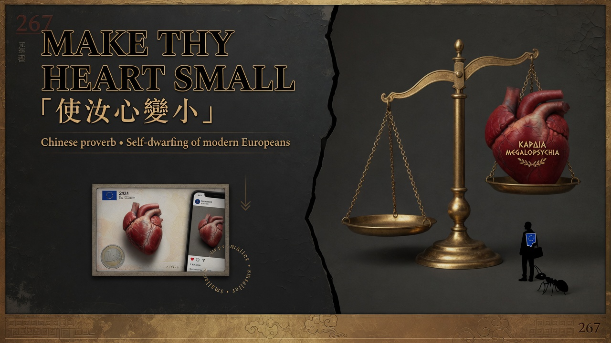
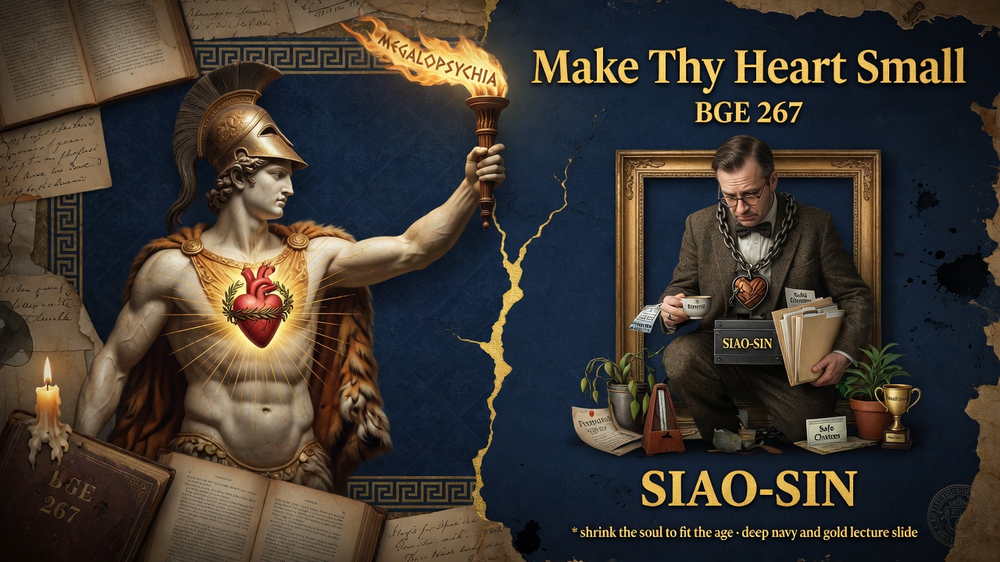

Section 267
Modern civilization's hidden command is "make your heart small"—the opposite of expanding your soul. Today's culture celebrates being relatable, risk-averse, and suspicious of greatness. Refuse the shrinkage; make your heart big enough for a higher destiny.
- “MAKE THY HEART SMALL.”
- “essentially fundamental tendency in latter-day civilizations.”
The self-dwarfing command "make thy heart small" is the moral core of modern civilization. The contemporary equivalents are everywhere: the praise of being relatable, celebration of modest ambitions, risk-aversion disguised as wisdom, and corporate humility training.
- The self-dwarfing command "make thy heart small" is the fundamental tendency of latter-day civilizations and inverts the noble imperative of soul-expansion.
- The contemporary praise of relatability, modest ambitions and risk-aversion is the moral equivalent of this shrinkage.
- The free spirit refuses the invitation to make the heart small and instead cultivates the capacity to bear higher destiny and greatness.
The self-dwarfing command "make thy heart small" is the moral and psychological core of modern civilization. It inverts the ancient and noble imperative of soul-expansion and rank.
This short but potent aphorism reinforces the book's diagnosis of the democratic movement as a bodily and spiritual process of assimilation and leveling. It stands in direct opposition to the pathos of distance and the cultivation of higher types developed elsewhere in Part Nine and the work as a whole.
The contemporary equivalents are everywhere: the praise of "being relatable," the celebration of modest ambitions, risk-aversion disguised as wisdom, corporate "humility" training, and cultural suspicion of any display of greatness or intensity. The free spirit recognizes the "SIAO-SIN" imperative as an invitation to shrinkage and consciously refuses it. The task is not to make the heart small but to make it large enough to bear the weight of a higher destiny.
Visual Slides


